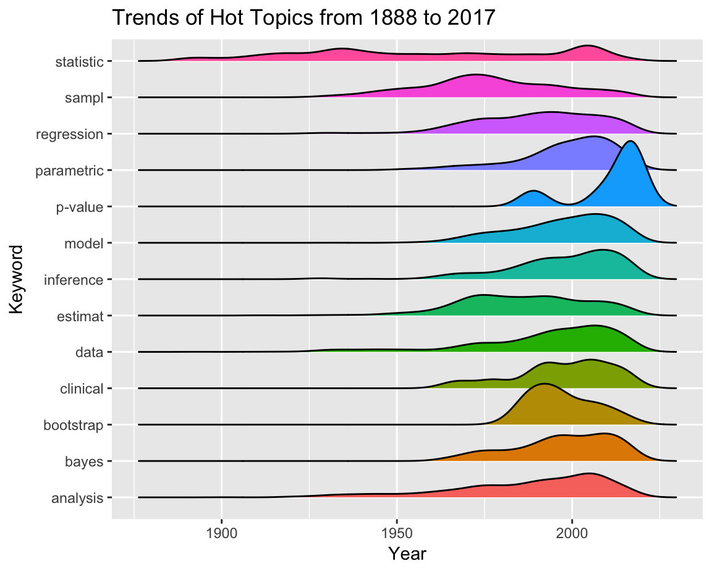

---
title: "Visual Analysis"
output:
flexdashboard::flex_dashboard:
storyboard: true
social: menu
source: embed
theme: yeti
---
```{r setup, include = FALSE}
library(flexdashboard)
library(plyr)
library(ggplot2)
library(ggridges)
library(plotly)
library(dplyr)
library(readr)
library(gridExtra)
```
### Top statistical "hot topics" by year from 1888 - 2017
```{r, echo = FALSE, message = FALSE}
jasa_rm_stopwords = read_csv("./analysis/data/jasa_rm_stopwords.csv")
# Top word by year, proportion
pop_word_prop = jasa_rm_stopwords %>%
group_by(year) %>%
dplyr::count(word) %>% # DONT DELETE dplyr::
mutate(sum = sum(n),
proportion = n/sum) %>%
arrange(proportion) %>%
top_n(1) %>%
ggplot(aes(x = year, y = proportion, fill = word)) +
geom_bar(stat = "identity", position = "dodge") +
labs(title = "Top Words by Year")
ggplotly(pop_word_prop)
# "statistics" in late 1800's to early 1900's popular
# "data", "models" popular in late 1900's and 2000's ("data" in 2006)
```
### Trends of statistical "hot topics" from 1888 - 2017
```{r}
words_ridges = jasa_rm_stopwords %>%
filter(matched_word != "NA") %>%
ggplot(aes(x = year, y = matched_word, fill = matched_word)) +
geom_density_ridges() +
labs(title = "Trends of Hot Topics from 1888 to 2017") +
theme(legend.position = "none") +
ylab("Keyword") +
xlab("Year")
words_ridges
```
### Number of collaborators per article for every year from 1888 - 2017
```{r, 3rd plot}
library(janitor)
library(tidyverse)
library(tidytext)
jasa_articles <- read_csv("./analysis/data/jasa_articles_dataset_complete.csv")
jasa_articles <- jasa_articles %>%
clean_names() %>%
separate(authors, into = c("author1", "author19"), sep = " & ") %>%
separate(author1, into = paste("author", 1:18), sep = ", ") %>%
unnest_tokens(word, title)
data("stop_words")
jasa_articles = anti_join(jasa_articles, stop_words)
jasa_articles <- jasa_articles %>%
dplyr::select(`author 1`:author19, year)
no_authors_year <- jasa_articles %>%
dplyr::mutate( number_authors = rowSums(!is.na(jasa_articles)) - 1) %>%
dplyr::select(number_authors, year) %>%
group_by(year) %>%
dplyr::summarize( Mean_no_authors = mean(number_authors))
finalplot <- no_authors_year %>%
ggplot(aes(x = year, y = Mean_no_authors, color = Mean_no_authors)) +
geom_point() +
geom_smooth(se = FALSE, color = "dodgerblue3") + labs(
title = "Trend of the mean number of authors",
x = "Year",
y = "Mean number of authors"
) +
theme(legend.position = "none")
ggplotly(finalplot)
```
### Number of citations per statistical "hot topic"
```{r, 4th plot}
library(forcats)
library(tidyverse)
jasa_rm_sw = read_csv("./analysis/data/jasa_rm_stopwords.csv")
citation_top10 <- jasa_rm_sw %>%
dplyr::filter(!is.na(matched_word)) %>%
dplyr::select(id, citations, matched_word) %>%
group_by(matched_word) %>%
dplyr::summarize( Total_number_of_citations = sum(citations)) %>%
rename(word = matched_word)
citation_top10 %>%
dplyr::mutate(Hot_topics = fct_reorder(word, Total_number_of_citations)) %>%
plot_ly(x = ~Hot_topics, y = ~Total_number_of_citations, color = ~Hot_topics, type = "bar") %>%
layout(
xaxis = list(
type = 'category',
title = 'Keyword'
),
yaxis = list(
title = 'Total Number of Citations'
)
)
```